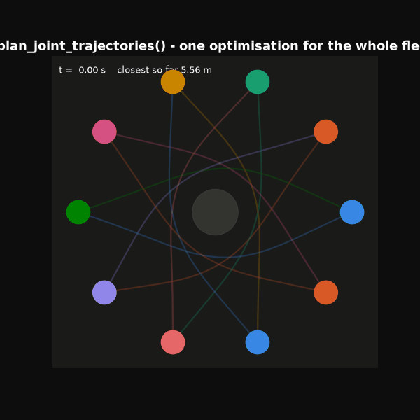
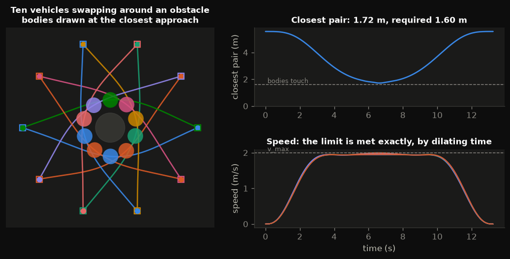
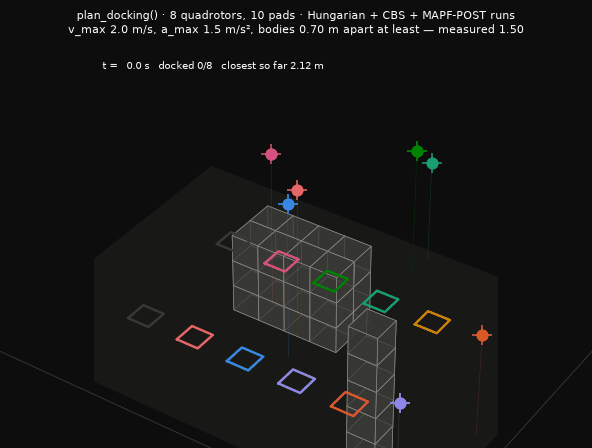
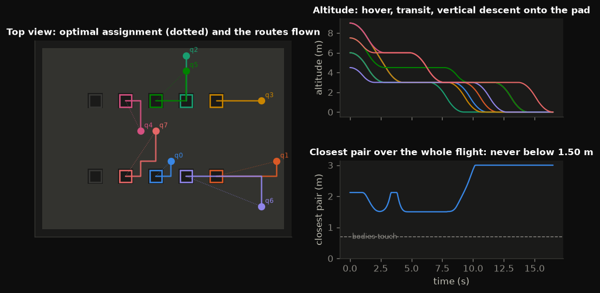
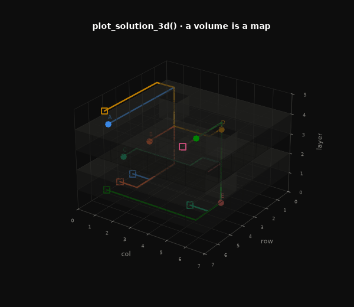
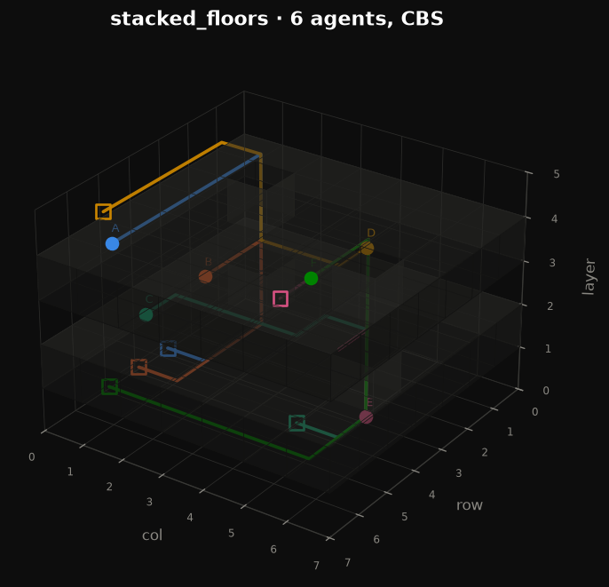
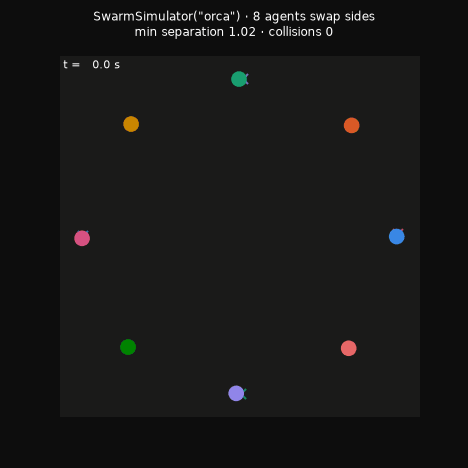
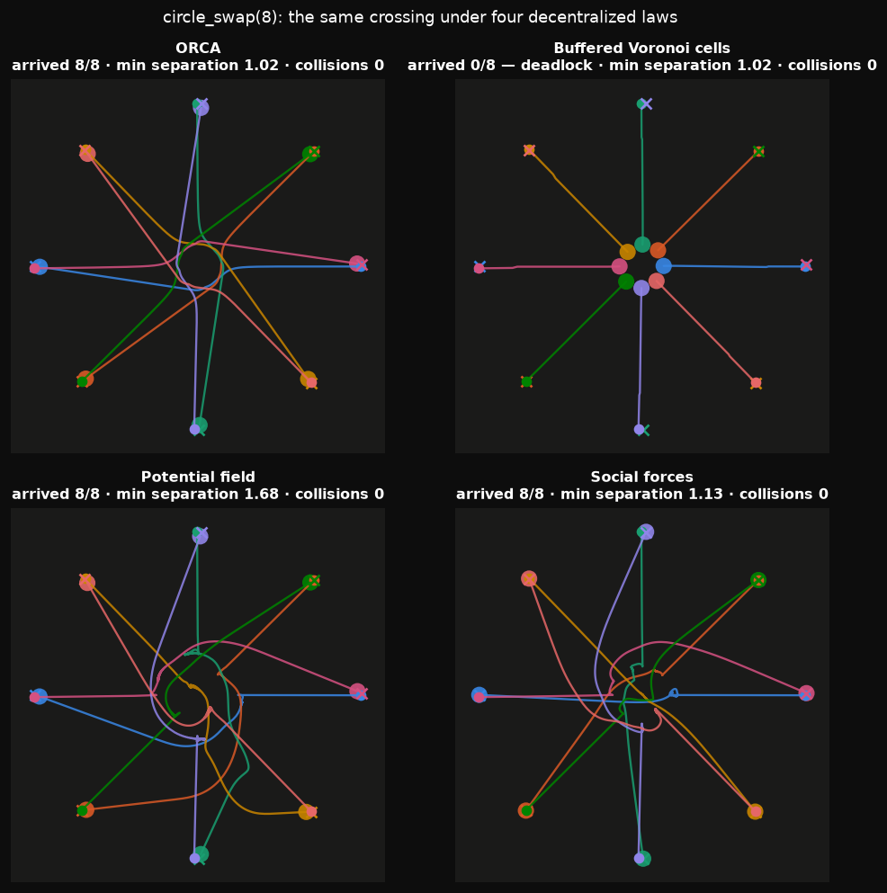
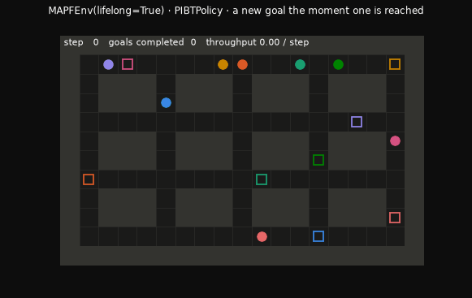
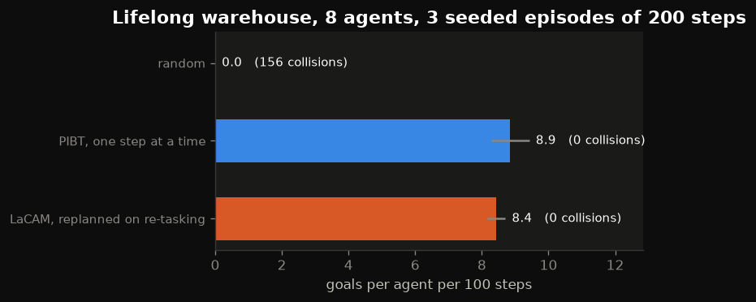

Multi-agent path finding
you can watch.
PyMAPF plans conflict-free routes for fleets of agents on a grid. This page runs the library itself — compiled to WebAssembly — so you can edit a map, launch a solver, and watch conflict-based search discover and resolve every collision in real time.
Playground
Pick a scenario or paint your own walls, choose a solver, and hit run. The search animates as it happens: every ✕ is a collision the planner found and had to design around.
pymapf source in a worker. JS is an
exact port used while Pyodide downloads.
The code this just ran
This is a real Python interpreter with PyMAPF importable. Edit anything and
run it — print() goes to the output pane, and if your script
leaves a solution behind, it is drawn on the Visual tab.
Waiting for the Python runtime…
Runs every solver over a sweep of instances, right here, and charts what each one trades away. Nothing is pre-computed.
Runtime vs. agents
Log scale — optimal search grows exponentially with conflicts.
Solution cost vs. agents
What the faster solvers give up, measured against optimal.
Instances solved
Completeness within the time budget.
Results
Every run in the sweep.
Three solvers, three trade-offs
Every solver in PyMAPF implements the same MAPFSolver interface and
registers itself by name, so swapping one for another is a string change.
CBS — optimal
Searches a binary constraint tree, best-first on sum-of-costs, and returns a provably optimal plan. Exponential in the number of conflicts: on corridor-heavy maps it needs a time budget.
Weighted CBS — bounded
Keeps a focal list of nodes within w × the best known bound and
expands the one with fewest conflicts. Cost is guaranteed within a factor of
optimal, typically an order of magnitude faster.
Prioritized — greedy
Plans agents one at a time against the reservations of the ones before them. Milliseconds even for large fleets, but incomplete: a bad priority order can fail on a solvable instance.
LaCAM — complete
Searches whole configurations, generating successors lazily with PIBT. Complete, and fast enough for thousands of agents. Measured here: it solved 6 of 7 instances where PIBT livelocked and a solution provably existed.
PIBT — one step at a time
Every agent proposes its best next vertex; conflicts are settled by priority inheritance, recursively. O(agents x degree) per timestep, and incomplete — it livelocks on about a quarter of our warehouse instances.
MAPF-LNS — anytime
Destroy a small group of agents, re-plan them against the rest, keep the result if it is cheaper. Never returns worse than its initial plan, and takes PIBT's warehouse plan from cost 175 to 113 in two seconds.
Learning, scored against the optimum
The same instances are also a PettingZoo-parallel environment.
IPPO and MAPPO train on them with no dependency beyond
numpy — the default network is an MLP with hand-written backpropagation and Adam,
gradient-checked against finite differences. A rollout returns a real
pymapf.Solution, so a learned policy is scored by the same
sum_of_costs and the same is_valid() as CBS.
Every number below is read from
rl-benchmark.json, written by
scripts/train_rl.py — this page does not restate it.
Benchmark
Learners and planners on identical seeded instances. loading…
What it found
Three results, one of which is about evaluation rather than about MAPF.
How you sample matters more than what trained it. The same weights score 45% solved at 1.11× optimal under argmax, and 100% at 2.94× when sampled. Papers that do not state their action selection may not be comparable to each other.
The greedy failures are two different bugs. Over 80 instances, 33 failures split 70% collision-free period-2 orbits — the agents never touch, so the conflict rules are never invoked — and 30% period-1 freezes colliding every step, which is genuine livelock. Reporting one instance would have supported either story confidently.
IPPO and MAPPO are indistinguishable here (45% vs 44%, both 1.11×), matching the MAPPO paper's own conclusion. The learned policy is not competitive as a solver; as a heuristic inside a search it would be a reasonable thing to try — which is where the field went.
Gallery
Every figure below is produced by pymapf.viz from the same theme the
playground uses — regenerate them with python scripts/generate_gallery.py
and python scripts/generate_feature_demos.py.












Get it
# the solvers need nothing but the standard library pip install pymapf # plots, animations and live views pip install "pymapf[viz]" # the multi-agent RL layer — numpy only pip install "pymapf[rl]"
import pymapf from pymapf import viz scenario = pymapf.build_scenario("warehouse", n_agents=8) trace = pymapf.SearchTrace() solution = pymapf.solve(scenario.to_problem(), "cbs", observer=trace) print(solution.sum_of_costs, solution.makespan) viz.save(viz.plot_solution(solution, scenario), "plan.png") viz.save_animation(viz.animate_solution(solution, scenario), "plan.gif")